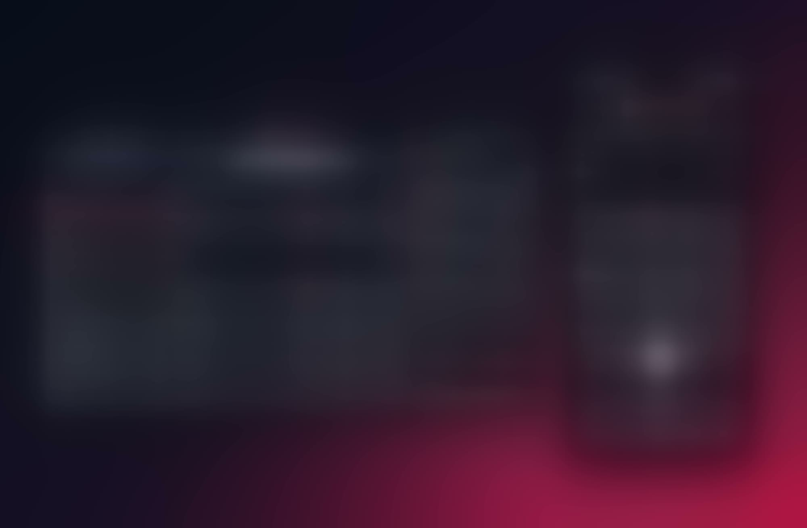

Todo en una sola pantalla
Qué cambió
- Antes: la pantalla inicial solo mostraba una lista de deportes para elegir
- Después: se aprovecha todo el ancho para mostrar deportes y ligas, cuotas y el betslip juntos en una sola pantalla
Un recorrido por el rediseño de las apuestas para los jugadores de un sportsbook: el mapeo del flujo anterior, su reconstrucción en torno a una sola pantalla flexible y su adaptación a móvil y a los temas de color de cada marca.

PayPerHead ofrece un software de sportsbook que permite a los corredores de apuestas gestionar a sus agentes y sus líneas de apuestas, y operar un sitio de apuestas con marca propia para los jugadores de cada agente.
Los sitios de apuestas estaban desactualizados y eran difíciles de usar, lo que debilitaba la retención de jugadores y la credibilidad de las marcas. El rediseño reemplazó un flujo de apuestas rígido, paso a paso, por uno flexible, definido a partir del feedback de los usuarios, los objetivos de negocio y las limitaciones técnicas de los proveedores externos.
El resultado es una sola pantalla para toda la apuesta, una mejor experiencia móvil y una mayor variedad de temas de color para cada marca.
Antes y después
Qué cambió
Se mapeó todo el flujo, clic por clic, desde el menú de deportes hasta la confirmación.
Proceso anterior
Nuevo diseño
El asistente paso a paso, donde volver atrás borraba todo el progreso, se reemplazó por tres columnas que funcionan una al lado de la otra: deportes, líneas y el betslip. Los apostadores pueden ajustar cualquiera de ellas de forma independiente, en cualquier momento, sin perder las selecciones que ya hicieron.
No se perdió nada. Cada parte del asistente se convirtió en algo visible en la página, que se puede cambiar en cualquier momento y usar en cualquier orden.
Antes
Los apostadores tenían que elegir el tipo de apuesta desde el principio, en una lista oculta de 10 opciones, antes de ver un solo partido.
Ahora
Straights, Parlays, Teasers, If Bets y Round Robins son pestañas del betslip. Primero se eligen los partidos, y el tipo de apuesta se puede cambiar sin perderlos.
Antes
Una barra de progreso de 4 puntos obligaba a los apostadores a seguir un orden fijo. Volver atrás borraba su progreso y los regresaba al inicio.
Ahora
Tres columnas conviven una al lado de la otra: la lista de deportes, los partidos del evento y el betslip. Todos los pasos son visibles a la vez, así que la barra de progreso ya no es necesaria.
Antes
Cada pantalla terminaba con botones de navegación, que sumaban cuatro clics extra antes de llegar al monto de la apuesta.
Ahora
Al hacer clic en una cuota, se agrega directamente al betslip, que muestra el riesgo y la ganancia potencial de cada selección. Los totales cambian al instante al ingresar los montos, y un solo Place Bet lo confirma todo.
Mejoras de la plataforma
El encabezado pasó de dos filas saturadas a una sola fila organizada por función. Esto liberó espacio para el contenido de apuestas y creó una jerarquía más clara, que permite a los jugadores encontrar cada acción más rápido.
El antiguo menú hamburguesa mostraba muchos productos a la vez en una larga lista. El menú se reorganizó por función: los productos ahora están en la barra inferior, al alcance del pulgar, mientras que la información personal y de la cuenta está en un panel de perfil en la parte superior. Cada categoría tiene un lugar claro, así que los jugadores siempre saben dónde encontrar lo que necesitan.
Minimizar la fatiga de decisión
El flujo anterior obligaba a los jugadores a elegir un tipo de apuesta antes de ver cualquier partido, y cada cambio significaba empezar de nuevo. Esa repetición generaba fatiga.
El nuevo betslip mantiene cada selección a mano y permite cambiar de tipo de apuesta sin salir de la pantalla, adaptándose a lo que requiere cada uno.

Tokens de color
Cada tema de color se construyó sobre el mismo conjunto de variables de color, agrupadas por función: superficie, borde, texto e ícono. Al cambiar de tema se actualizan todas las variables a la vez, así el acordeón de cuotas mantiene su estructura y su contraste en cada marca.
color-surface-pageencabezado y páginacolor-surface-cardfilas y piecolor-surface-row-altfila alternacolor-surface-cardpiecolor-surface-selectedcuota seleccionadacolor-border-accentlínea del encabezadocolor-border-cardcontorno de la tarjetacolor-border-oddscontorno de la cuotacolor-border-accentcontorno seleccionadocolor-text-primaryliga, fecha, equipos, horacolor-text-selectedcuota seleccionadacolor-text-actionenlace “see more”color-text-oddstexto de la cuotacolor-icon-primaryícono de la ligacolor-border-accentflecha para contraercolor-icon-actionflecha de “see more”Las solicitudes de más personalización llegaban constantemente al equipo de atención al cliente: los agentes querían que el color tuviera un papel real en sus sitios. Antes, un tema solo podía alternar entre blanco y negro, con un color de hero apenas visible. Ahora el color está profundamente integrado en la personalización de temas y lleva la paleta de cada marca a botones, selecciones, pestañas y el betslip.
Resultado
Más proyectos